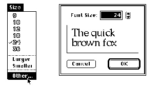

Legacy Document
Important: The information in this document is obsolete and should not be used for new development.
Important: The information in this document is obsolete and should not be used for new development.


Adding Font Sizes and Names to the Menu
When you use the Menu Manager to add font sizes to a menu, make sure that you construct the menu so that it displays appropriate sizes for both bitmapped and outline fonts. Keep the following guidelines in mind:
Figure 4-14 shows one possible method for accomplishing these goals in a menu.
- Support all possible font sizes. The maximum point size on the QuickDraw coordinate plane is 32,767 points.
- Provide a short list of the most useful font sizes. For the menu that your application uses to display font sizes, you shouldn't predefine a static list of sizes available to the user or allow the default to be every possible font size, because outline fonts can produce thousands of sizes.
- Provide a method of increasing or decreasing the font size by one point at a time. You can add Larger and Smaller commands, which make choosing slightly different sizes for outline fonts easier for the user. Also, the user should be able to choose any possible point size at any time in a simple manner.
- Place a check next to the current size.
- Display available font sizes in outline style. For a bitmapped font, the
RealFontfunction returnsTRUEif the font is available in the requested point size andFALSEif the font is not; you can thereby determine which bitmapped fonts are available. For outline fonts, theRealFontfunction returnsTRUEfor almost any size. The font's designer may decide that there is a lower limit to the point sizes at which the font looks acceptable. TheRealFontfunction returnsFALSEfor an outline font if the size requested is smaller than this lower limit.
Figure 4-14 A sample Size menu and font size dialog box
 To create a menu that displays font names, use the
AddResMenuprocedure. This procedure ensures that any changes to the Font Manager do not affect your application and that the menu that displays font names is not dependent on how fonts are stored in system software. TheAddResMenuprocedure is documented in the chapter "Menu Manager" in Inside Macintosh: Macintosh Toolbox Essentials.